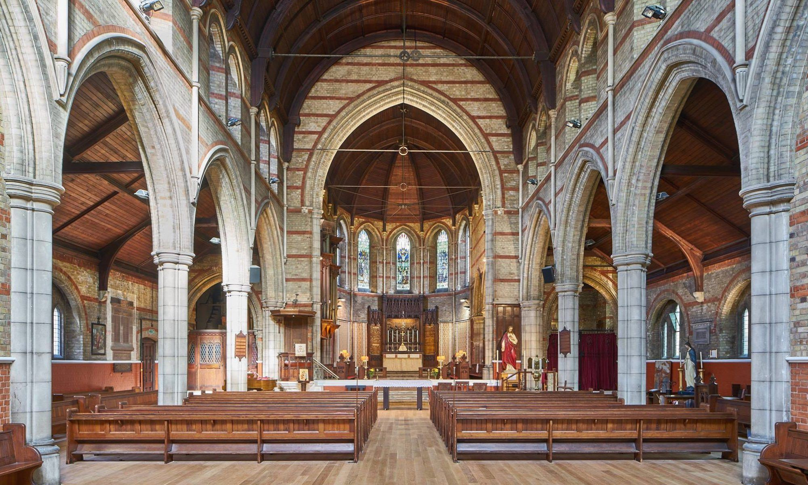
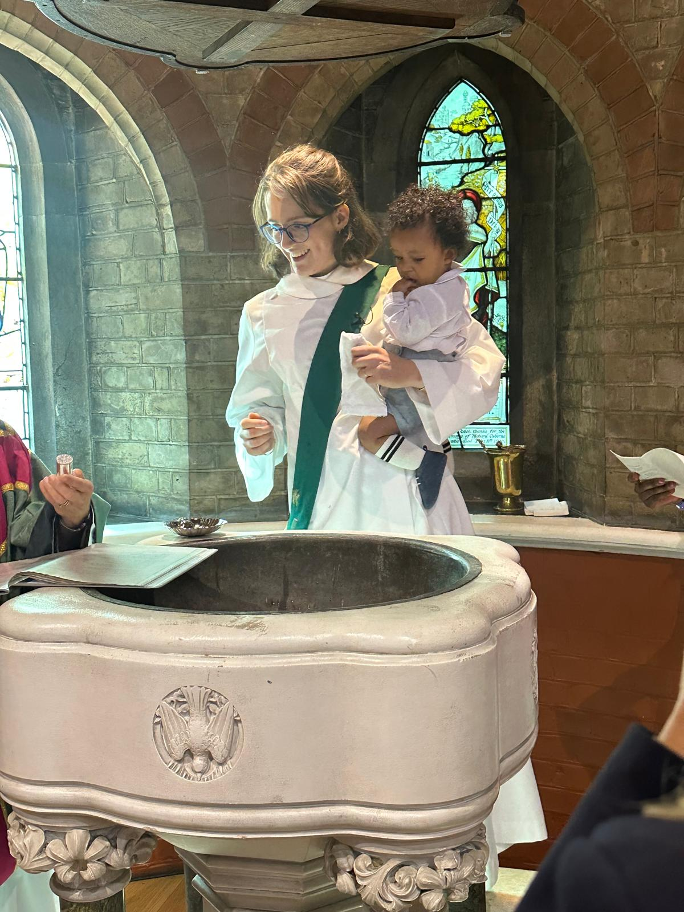

A short history and guide to Emmanuel Church, West Hampstead — from a mission church among the new Victorian terraces to the parish church we know today.
The origin of Emmanuel Church lies in the rapid development of West Hampstead in the second half of the nineteenth century, after the arrival of the railways.
Previously there had been only a few large houses — all now demolished — constituting the hamlet of West End in the parish of Hampstead, scattered around what is now West End Green. The Hampstead Junction (1860), the Midland (1868) and the Metropolitan Line (1879) each opened a station on West End Lane, and by 1900 the little rural hamlet had been replaced by what you see today: a land of minor late-Victorian terraces and mansion flats.
In 1952 the architectural historian Sir Nikolaus Pevsner considered the area worth visiting only by those in search of Victorian churches — “the houses and streets,” he wrote, “require no notice.” Opinions change with time. West Hampstead is now a fashionable place to live, and in 1996 West End Lane and its surrounding streets were designated a Conservation Area.
The name “West End” survives in the legal title of the benefice — Emmanuel, West End, Hampstead — and in West End Lane and West End Green, the small village green still visible at the west end of the church. The original hamlet was part of the parish of St John’s, Hampstead until 1872, when it was assigned to the new parish of Holy Trinity, Hampstead.
There have been two buildings in West Hampstead with the title “Emmanuel Church.” In 1874 the vicar of Holy Trinity, Hampstead organised the erection of a small mission church of brick, of no great architectural merit, on a plot at the corner of Mill Lane and Aldred Road. Ten years later the congregation had outgrown it, and in 1884 it was doubled in size by an extension. The continuing growth of the neighbourhood led to a new parish: on 9 May 1885 Emmanuel Church became the parish church of the new parish of West End, Hampstead.
The congregation kept growing, and by the early 1890s the church was again too small. Plans were made for a new church on a more central site — land was acquired on the east side of the village green, at the junction of West End Lane, Mill Lane and Fortune Green Road. The old mission church became structurally unsound and was demolished in 1901; part of the mansion block now known as Cholmley Gardens stands on the site.
The architect was J. A. Thomas, of Whitfield and Thomas of Cockspur Street, Charing Cross. The foundation stone was laid on 19 June 1897. The chancel, flanked by a chapel and organ loft, the first four bays of the nave, and the first two floors of a projected tower were built, and the partly-finished church was consecrated on 8 October 1898. The west end was walled up with plain brick, with a central doorway — foundations of which survive beneath the present floor.
Work stopped that year for lack of funds, but it was thought enough had been built to warrant consecration, in the hope that regular use would help raise the money to finish. Construction resumed in August 1902 to add the fifth bay of the nave, the narthex, the baptistery and the porches. The completed additions were dedicated on 29 June 1903, giving the church its present appearance. The tower was never finished — and probably the time for such major construction is now past.
For nine months from 19 January 2016 the church was closed for extensive works to correct a seriously sinking nave floor, designed by architects Donald Insall Associates and carried out by the Gowlain Building Group. During this time the congregation worshipped in the main hall of Emmanuel School, two minutes’ walk away.
The parquet floor was lifted and the ground excavated; thirty-four deep piles were drilled to give a firm base for a steel-and-concrete under-floor, with new underfloor heating. The tired 1968 vestries were demolished, and the two westernmost bays of the north and south aisles developed into four new community rooms on two floors — built in specially-fired bricks to match the Victorian tracery — together with a new kitchen, an accessible WC and shower room. A new wrought-iron screen was installed across the narthex so the church can be opened more readily for prayer, and a solid oak Junckers floor laid throughout for the underfloor heating.

Emmanuel is one of many hundreds of parish churches built in urban areas during the nineteenth century. Its brick construction marks its late-Victorian date: for years fashion decreed that churches be built of stone, and it was only with the bold brick of William Butterfield and J. L. Pearson that brick came into widespread church use.
From about 1840 it became fashionable to build in the Gothic Revival style. There are clear echoes of it here — the tall pointed arches and, above all, the narrow lancet windows typical of “Early English,” the earliest phase of original Gothic. Emmanuel possesses these lancets in abundance, in contrast to the wide traceried windows of the later “Decorated” and “Perpendicular” phases.
The church is sometimes described as “basilican” — a rectangular building with a main aisle, two side aisles, a double colonnade and an apse opposite the main entrance, a form derived from Roman civic architecture and adopted by the earliest Christian churches. Emmanuel has some of these elements, though others, such as a coffered ceiling, are missing.
The church is a rectangle with a nave of five bays, lean-to north and south aisles, an apsidal chancel flanked by an organ chamber and a vestry, and a narthex and semi-circular baptistery at the west.

In a semicircular recess in the narthex stands a stone font on four columns of green marble, dating from 1898. A brass plate records, amusingly, that it was given by “the children of the parish.” The elaborate pinnacled oak cover was added in 1902 to mark the coronation of King Edward VII and Queen Alexandra, and is raised and lowered by a counterpoise weight.
Except in Eastertide and on baptism Sundays, the baptistery houses the gold-painted wrought-iron paschal candlestick, acquired in 1994 from the demolished church of St Saviour, Alexandra Park.
The first comment from visitors is astonishment at the size of the interior, of which the exterior gives only a slight indication — the church is shielded by trees, set back from the road and built on the side of a hill. The plan is a typical late-nineteenth-century lancet-style basilica, in white stock brick banded with red, the barrel-vaulted timber roof resting on a clerestory of paired lancets above arcades of pointed arches on clustered piers. It was originally choked with pews seating 800; the aisles were cleared in 1984 and parts of the nave in 1993 for more flexible liturgy and for the concerts held here each year.
Along the north and south walls are the fourteen Stations of the Cross — oleographs (oil-painted prints) of about 1900, numbered in Roman numerals. They begin at the war memorial in the north aisle and run round to the south, depicting Christ’s journey from his condemnation by Pilate to his burial in the tomb.
The screen at the east end of the north aisle leads to the organ loft. The organ is a fine three-manual instrument by J. W. Walker and Sons, built in 1910 — and, like the tower, unfinished: there is no pipework for the “Choir” manual. The first three organists of the new church — Martin Shaw, Henry Cope Colles and Harold Darke — all became prominent church musicians, and the specification was drawn up by Sir Henry Walford Davies, Master of the King’s Music, then a parishioner.
The plain Gothic-carved oak pulpit of 1901 commemorates Mandell Creighton, Bishop of London, who laid the foundation stone in 1897. On the south side stands the brass eagle lectern of 1898, the eagle being the symbol of St John the Evangelist, whose theology is said to “soar” over the rest of the New Testament.
Three steps lead up through the septum into the chancel, with its polychrome tiled floor and Gothic oak choir stalls. The chancel ends in a polygonal apse; at its centre is the altar, the heart of Christian worship, where the Eucharist is celebrated each Sunday. Behind it the carved oak reredos of 1908 depicts the Last Supper, flanked by the Apostles’ Creed, the Lord’s Prayer and the Ten Commandments. Above hangs the brass sanctuary lamp, a light burning constantly to mark the presence of the reserved sacrament.
The apse is lit by five tall lancets, three with stained glass of 1903 by Charles Kempe (1837–1907) — depicting the Nativity at Bethlehem, the Crucifixion at Calvary, and the risen Christ appearing to St Mary Magdalene. Below them the apse floor is a striking art-nouveau mosaic of black, white, green, yellow, salmon and ox-blood marbles, revealed in 1992 after a carpet and generations of dirt were removed.
In 2017 the former vicar’s study — once a vestry in the original building — was converted into a daily prayer chapel called the Nazareth Chapel. It houses an image of Our Lady of Walsingham, a copy of that in the Holy House at Walsingham, where a lamp burns for Emmanuel Church and School. It is a place of stillness and quiet at the heart of West Hampstead, used for the Daily Offices and midweek Eucharist.
The parish of Hampstead — Emmanuel — West End, from its creation in 1885 to the present day.
| Vicar | Incumbency | Note |
|---|---|---|
| The Revd Edmund Davys MAInstituted & inducted 9 May 1885 · b. 1822, d. 1901 | 1885 — 1894 | First vicar |
| The Revd Ernest Sharpe MALater Archdeacon of London, 1920–1947 | 1894 — 1908 | — |
| The Revd Dundas Harford MALater Rector of Sculthorpe, Norfolk | 1908 — 1920 | — |
| The Revd Percy Gordon MALater Rural Dean of Bradfield | 1920 — 1925 | — |
| The Revd Cecil Norman DeVine MA MCInstituted 7 January 1926 | 1926 — 1945 | — |
| The Revd John (Jack) Neville Hoare LLBInstituted 16 January 1946 | 1946 — 1955 | — |
| The Revd Jack Dover Wellman MADied in office, 1989 · the longest incumbency | 1956 — 1989 | 33 years |
| The Revd Professor Peter Galloway OBEPriest-in-charge from 1990 · Area Dean of North Camden 2002–07 | 1990 — 2008 | Author |
| The Revd Jonathan Kester BA FRSAArea Dean of Camden · also Priest-in-Charge of St Cuthbert’s | 2008 — 2022 | — |
| The Revd Dr Catriona LaingInstalled September 2023 | 2023 — present | Current vicar |
The best way to know Emmanuel is to step inside. You are warmly welcome at any of our services, or to visit the Nazareth Chapel for quiet prayer.